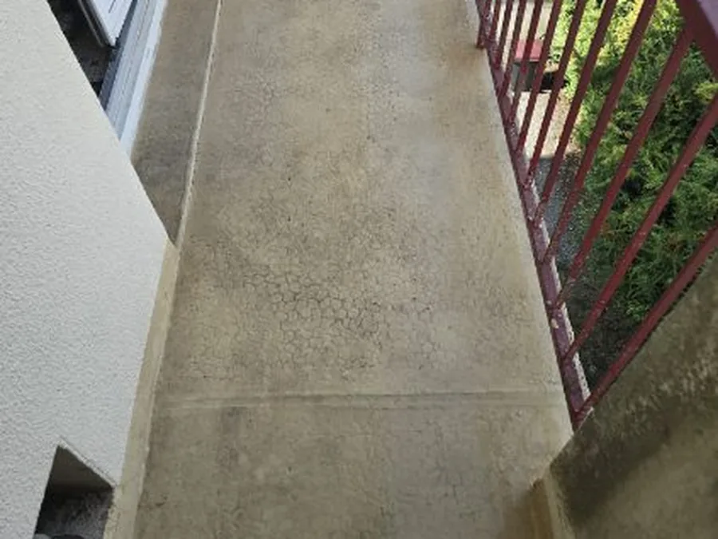
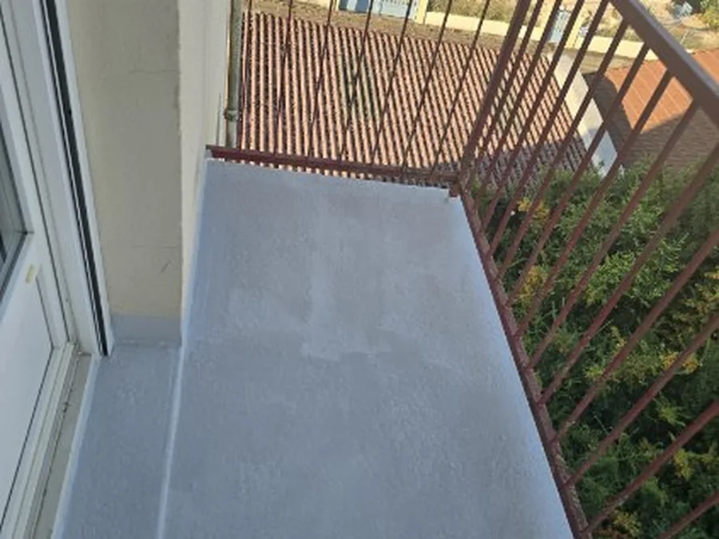

Diagnostic du support
État de la dalle, fissures, carrelage existant, pente et évacuation de l'eau : la méthode est choisie après visite.
Balcon fissuré, terrasse qui fuit, plafond taché en dessous : nous reprenons le support et posons un revêtement d'étanchéité continu pour stopper les infiltrations. Visite et devis gratuits.
Réalisation
Deux balcons traités : le sol fissuré et terni devient un revêtement continu, sans joint par où l'eau peut passer.


Pour aller plus loin
Si la façade sous le balcon est tachée ou fissurée, voir ravalement de façade ou nettoyage de façade. En immeuble, le balcon peut relever de la copropriété : voir ravalement en copropriété.
Le problème
Sur un balcon ou une terrasse, l'eau qui s'infiltre ne se voit souvent qu'en dessous, quand les dégâts ont commencé.
Taches, auréoles ou peinture qui cloque au plafond de la pièce ou du balcon du dessous : l'eau traverse la dalle.
L'eau atteint les armatures, qui rouillent et gonflent : le béton éclate en nez de dalle et les fers apparaissent.
Carreaux qui sonnent creux ou se décollent, joints fissurés : l'eau passe dessous et stagne.
Traînées noires sous le balcon, enduit qui se dégrade : l'eau mal évacuée salit et abîme la façade.
Notre solution
Une étanchéité ne tient que si le support est préparé : c'est l'essentiel du travail.
État de la dalle, fissures, carrelage existant, pente et évacuation de l'eau : la méthode est choisie après visite.
Fissures ouvertes et traitées ; béton éclaté purgé et reconstitué après traitement des armatures.
Primaire puis revêtement d'étanchéité continu, armé sur les zones sensibles, adapté au support et à l'usage.
Jonctions avec le mur, seuils et nez de dalle traités : c'est souvent par là que l'eau entre.
Nous examinons le balcon, son support et la façade en dessous.
Nettoyage, ponçage ou décapage, reprise des fissures et du béton.
Primaire, revêtement d'étanchéité et relevés, en respectant les temps de séchage.
Finition antidérapante si besoin, contrôle et nettoyage du chantier.
Pourquoi nous choisir
Plus de 15 ans d'expérience au service de votre patrimoine en Charente.
Basés à L'Isle-d'Espagnac, nous connaissons parfaitement les spécificités des bâtiments charentais.
Nous nous déplaçons pour évaluer l'état réel du support avant de chiffrer : pas de devis à l'aveugle.
De la visite à la fin du chantier, vous échangez avec la même personne, par téléphone ou via le formulaire.
Nous nettoyons et rangeons le chantier chaque soir. Votre confort est notre priorité.
Du diagnostic aux finitions, la même équipe suit votre chantier et reste joignable.
Nous choisissons les matériaux selon le support et l'usage : pas de solution standard appliquée partout.
Zone d'intervention
Étanchéité de balcons et terrasses à Angoulême, dans le Grand Angoulême et dans de nombreuses communes de Charente (16). Voir toutes les villes desservies.
Votre commune n'est pas listée ? Contactez-nous, nous intervenons également dans les communes voisines.
Nos autres services
Un balcon se traite souvent avec la façade qui le porte.
Embellissez vos façades et boiseries avec nos peintures haute qualité résistantes aux UV.
En savoir plusRénovation complète de vos façades : réparation, enduit, peinture et protection longue durée.
En savoir plusHydro-gommage doux et efficace pour redonner vie à vos murs extérieurs sans les abîmer.
En savoir plusTarifs & Devis
Le prix dépend surtout de l'état du support. Voici ce qui fait varier le devis.
Balcon de quelques m² ou grande terrasse : le prix au m² baisse avec la surface, mais un minimum de chantier s'applique.
Dalle saine, fissurée ou béton éclaté : les réparations avant étanchéité font la différence.
Carrelage à déposer ou à conserver, ancien revêtement à décaper : à voir sur place.
Étage, accès par l'intérieur du logement, protection des menuiseries : l'organisation du chantier compte.
50-80€/m²
Nettoyage, primaire et revêtement d'étanchéité
80-120€/m²
Fissures traitées, relevés, revêtement armé
100-150€/m²
Éclats et nez de dalle repris avant étanchéité
Prix TTC indicatifs pour un particulier en Charente. Un petit balcon a souvent un minimum de chantier (préparation, séchage, accès) : le devis gratuit après visite donne le prix exact.
Chaque projet est unique. Seul un diagnostic visuel permet d'établir un devis précis et juste.
F.A.Q
Les réponses aux questions que l'on nous pose le plus souvent.
En Charente, comptez en général 50 à 150 € par m² selon l'état du balcon :
Un petit balcon a souvent un minimum de chantier (préparation, séchage, déplacement). Le devis, gratuit, est établi après visite.
Les signes les plus fréquents : taches ou auréoles au plafond en dessous, peinture qui cloque, coulures sur la façade sous le balcon, carrelage qui sonne creux, béton qui s'effrite en bordure. Plus on agit tôt, plus la réparation reste simple.
Parfois : si le carrelage est bien adhérent, certains systèmes d'étanchéité peuvent être appliqués dessus après préparation. S'il sonne creux ou se décolle, il faut le déposer. Nous le vérifions lors de la visite.
Pour un balcon courant, comptez en général quelques jours, temps de séchage compris entre les couches. Les travaux se font par temps sec et hors gel : nous planifions selon la météo.
Cela dépend du règlement de copropriété : la dalle et l'étanchéité sont souvent des parties communes, le revêtement de sol parfois privatif. Vérifiez auprès du syndic avant de lancer les travaux (voir ravalement en copropriété).
Nous intervenons avec une assurance responsabilité civile professionnelle et une garantie décennale pour les travaux qui en relèvent. Nos attestations sont disponibles sur simple demande avant le début du chantier.
Devis gratuit
Décrivez-nous votre projet : réponse personnalisée sous 48 h, sans engagement.